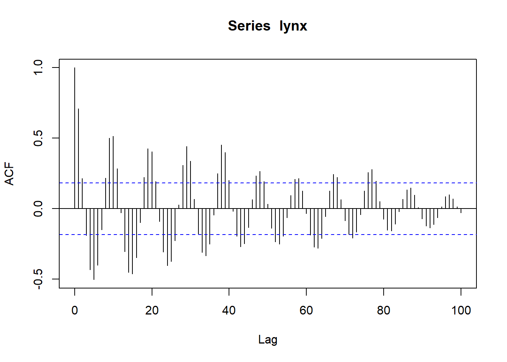
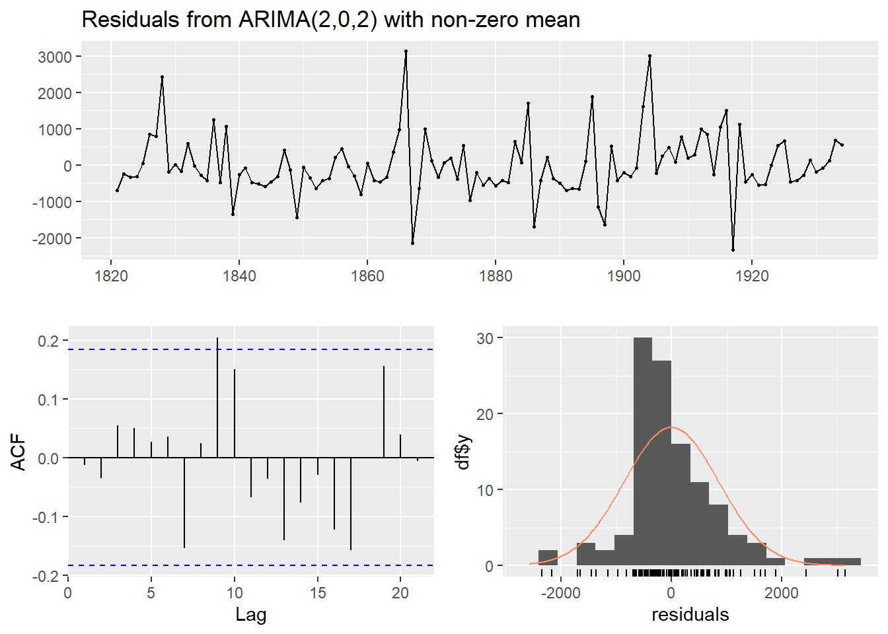

Bab 5 Model ARIMA
Ilmuwan mengembangkan tehnik untuk meramal data runtun waktu dengan dari berbagai unsur yakni AutoRegresi dan juga Moving Average. Ada lagi faktor I yang juga dapat membuat peramalan ini mempunyai metode yang berbeda dengan metode yang lainnya. Model ARIMA ini cocok untuk jangka pendek atau short term dan akan kurang berfaedah jika untuk meramal pada masa yang lebih jauh lagi. Metode ini ARIMA disebut juga Box_Jenkins sesuai dengan yang nama dari si penemunya.@Neusser2016
ARIMA sendiri untuk data time series univariate. Artinya penggunaan satu variabel data saja. Proses peramalan ini hanya menggunankan data itu saja bukan dari variabel yang lain baik itu variabel yang sejensi atay variabel yang berbeda sama sekali.
Unsur ARIMA adalah
Unsur AutoRegresi
\[ϕXt = µ’ + ϕXt-1 + ϕXt-2 +… + ϕXt-p+ εt[0]\]
dimana : µ’ = suatu konstanta
ϕXt-p = parameter autoregresif ke-p
εt = nilai kesalahan pada saat t
Unsur kedua adalah Moving Average atau rata-rata bergerak yang bisa kita tulisakan seperti ini
θXt = µ’ - θXt-1 - θXt-2 -… - θXt-k+ εt[0] dimana : µ’ = suatu konstanta θXt-p = parameter autoregresif ke-p εt = nilai kesalahan pada saat t Model Campuran Proses ARMA Untuk model enggabungan anatraa AR dan MA maka akan menghasilkan persamaan seperti ini: Xt = µ’ + ϕXt-1 + et- - θXt-1 Atau (1-ϕ1B)Xt = µ’ + (1- θ1B)Xt AR(1) MA(1) Proses ARIMA . Jika ada proses membuat non stationer maka permalan ARIMA dapat seperti
(B-1) (1-ϕ1B)Xt = µ’ + (1- θ1B)Xt Pembeda satu AR(1) MA(1)
ARIMA Musiman (Seasonal ARIMA) Pada beberapa data terjadi musiman seperti yang sudah dibahas diatas . Untuk itu ARIMA juga mengatasi hal ini dengan ARIMA musiman. Sesuai dengan namanya model ini lebih cocok dengan data yang mengandung musiman. Tentu ada beberapa c ara menegtehui data tersebut musiman. Seperti alnya musim-musim yang kita alami seperti musim hujan Da beberapa cara agar kita bisa mengetahui apakah data tersebut atau musiman.
Apakah data musiman itu juga data stationer ? Apakah kita bisa menggunakan ARIMA biasa dengan ARIMA Seasonal
Seberapaun metode yang kita gunakan itu akan berpulang lagi dengan kepada kita. Ada yang harus kita perhatikan kalau peramalan tersebut meleset atau tidak. Kita bisa lakukan dengan menghitung nilai error dari hasil peramalan. Kalau nilai error yang kecil maka kita bisa meyakini keunggulan dari peramalan kita akan menjadi lebih baik.
5.1 ARIMA R
Model ini adalah model yang sangat baik untuk kita kerjakan karena dengan model ini kita bisa mendapatkan suatua prediksi yang tepat untuk peramalan dalam time series. Dalam model ini maka kita
## Warning in adf.test(lynx): p-value smaller than printed
## p-value##
## Augmented Dickey-Fuller Test
##
## data: lynx
## Dickey-Fuller = -6.3068, Lag order = 4, p-value =
## 0.01
## alternative hypothesis: stationary
Setelah kita mengetahui kestationeran dari data maja kita bisa melakukan beberapa hal yakni dengan melihat model yang paling baik untuk metode ARIMA ini. Salah satu bentuk peramalan data yang berbentuk data berkala atau (Time Series) adalah ARIMA. Metode ini yang menggabungkan komponen autoregresi (p), difference (d) dan juga Rata-rata bergerak (Moving Average) yang digambarkan dengan q.
Metode ini sangat baik dan adalah bentuk penyermpurnaan. Dengan adanya metode yang baru bahkan berani bilang kalau metode ini lebih baik dari Artificial Neural Network (ANN) yang sidah terkenal dengan canggih sedemikian rupa.
Banyak beberapa software yang digunakan untuk menduga ARIMA. Tentu saja sesuai judul kali ini penulis akan membuat suatu tutorial untuk membuat pengeloan data time series dengan ARIMA.
Pertama kita akan membuat dahulu data. Kita bisa membuatnya dengan data manual kalau kita tidak merasa repot atau kita load dari txt dengan csv. Kemduian kita akan membuat data menjadi data time series
## Series: lynx
## ARIMA(2,0,2) with non-zero mean
##
## Coefficients:
## ar1 ar2 ma1 ma2 mean
## 1.3421 -0.6738 -0.2027 -0.2564 1544.4039
## s.e. 0.0984 0.0801 0.1261 0.1097 131.9242
##
## sigma^2 = 761965: log likelihood = -932.08
## AIC=1876.17 AICc=1876.95 BIC=1892.58
##
## Training set error measures:
## ME RMSE MAE MPE
## Training set -1.608903 853.5488 610.1112 -63.90926
## MAPE MASE ACF1
## Training set 140.7693 0.7343143 -0.01267127Setelah dari model auto.arima ini kita akan mengecek reisual dengan beberapa uji dan menunjukan apaka model sudah sesuai

##
## Ljung-Box test
##
## data: Residuals from ARIMA(2,0,2) with non-zero mean
## Q* = 12.167, df = 6, p-value = 0.05834
##
## Model df: 4. Total lags used: 10##
## Box-Ljung test
##
## data: residuals(modelarimalynx)
## X-squared = 12.167, df = 10, p-value = 0.274setelah melihat nilai MAPE begitu tinggi maka pertimbangkan adnya volatilitas di statistik ini
5.1.1 Pertanyaan
Apa yang dimaksud dengan ARIMA?
Apakah ARIMA Adalah penggabungan metode Auto Korelasi dengan Moving Average? Jelaskan Jawaban anda?
Coba tuliskan persamaan ARIMA dengan order ARIMA 2,1,2?
Apakah hal yang perlu dilakukan dalam Uji ARIMA?
Mengapa kita memerlukan untuk menghitang MAPE, MAE, RMSE dan sebutkan kegunaan dari semua itu?
Kalau nilai RMSE begitu besar maka jelaskan apa artinya bagi ARIMA?
Kalau data mengandung musiman maka apa yang dapat kita lakukan dengan hal itu?
Bagaimana cara membaca PACF dalam uji ARIMA?
Apa Fungsi Uji Ljung BOx pada model ARIMA
Apakah perlu untuk menguji heteroskedatisitas di ARIMA?